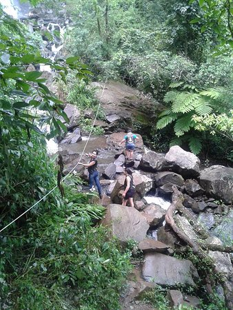

Cássia dos Coqueiros
Nevegação
Cachoeiras
Cachoeira do Itambé
Cachoeira do Itambé (rapel)
Cachoeira do ITambé (trilhas)

Como chegar:
21º16'58" sul e a uma longitude 47º10'11" oeste, estando a uma altitude de 890 metros.
Cidades Vizinhas
Ribeirão Preto (80km)
Batatais (76km)
Franca (120km)
Folia de Reis